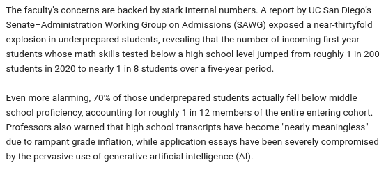

August 2026

No. New Mexico no longer requires students to pass standardized performance or “competency” testing to obtain a high school diploma.
Following the passage of House Bill 171 (HB 171), the state restructured its graduation standards. Students now earn the New Mexico Diploma of Excellence based on fulfilling required coursework and credits instead of benchmark test scores.
The current graduation and assessment rules in New Mexico break down as follows:
Previously, students had to pass specific standardized exams or complete complex “Demonstrations of Competency” in five core subjects to graduate. This testing requirement has been removed. Students can no longer be denied a diploma solely for failing a statewide exit exam.
There are no statewide exit exams, but students must still pass their normal classes to earn the required 24 graduation units. State rules still require a final examination at the end of each high school course offered for credit.
High school students in New Mexico are still required to participate in federal ESSA standardized testing in the 10th grade. However, a student’s performance score does not affect their ability to graduate.
While statewide competency testing is gone, the law allows local school districts and charter schools to implement their own academic performance benchmarks or local credit requirements if they choose.
You have hit on one of the most debated, systemic crises in modern American education. Your observation is correct: high school graduation rates are rising, but actual math proficiency is dropping.
Across the United States—and acutely in New Mexico—there is a disconnect between holding a “Diploma of Excellence” and possessing college-ready math skills. Universities are seeing surges in students who passed high school algebra with A’s or B’s but still require middle-school-level remediation when they arrive on campus.
This gap exists due to specific structural policies, including institutional grade inflation.
In the past, a diploma was tied to proving competence through exit exams. Today, most states—including New Mexico—have decoupled the two.
Your point about grade inflation boosting graduation rates is supported by educational data. High school GPAs have steadily risen, while SAT and ACT math scores have declined.
When students fail a required math course, they often do not retake the full 18-week class. Instead, they are funneled into digital “credit recovery” programs.
This systemic inflation continues until students cross into higher education, where university math departments do not lower their standards.
Ultimately, high schools are graduating students, but they are passing the academic debt to universities, which become expensive catch-up centers for foundational mathematics.
Roughly 26% of adults in New Mexico hold a bachelor’s degree or higher, while about 42% of students who enroll in New Mexico colleges successfully graduate with a 2-year or 4-year degree.
The second half of your question cuts directly to the state’s literacy crisis. While a high school diploma implies competence, the data shows that many students who do not go to college are left functionally illiterate.
New Mexico currently has the second-lowest adult literacy rate in the country. Educational and civic tracking metrics show how severe this crisis is for the non-college-bound population.
In New Mexico, 29% of adults score at or below “Level 1” literacy on national assessments.
Because high school grade inflation allows students to graduate without reading mastery, those who bypass college immediately enter a workforce that increasingly demands higher cognitive skills.
New Mexico leadership recognizes that the high school diploma is failing as a guarantee of literacy. The state has launched initiatives outside the traditional K–12 system:
In short, a New Mexico high school diploma no longer guarantees functional literacy. For the nearly 60% of students who do not complete a college degree, a large portion are left struggling to navigate modern life.
Because New Mexico recently passed House Bill 171, a student does not need to reach the “Proficient” threshold on ESSA tests to earn a high school diploma. They are required to take the tests, but they can legally graduate as long as they complete course credits—even if they score at a “Novice” level in math. This explains why graduation rates can rise while standardized proficiency rates remain low.
Jump to AI Practice and Computer Skills | Build Linux AI Prompts for Troubleshooting Help